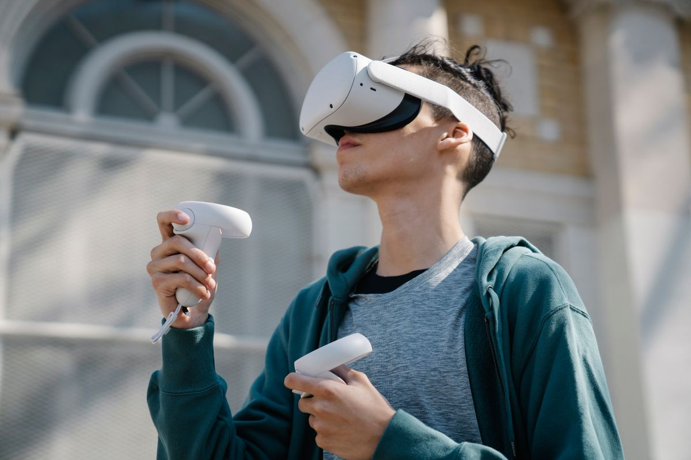

NEON HARBOUR
2024 · Standalone · Original titleThe brief
A cyberpunk market-street adventure — one dense, rain-lit street of stalls, trams and crowds — for standalone headsets, published by Halcyon Interactive. The publisher’s condition was the one I would have set myself: 90 fps on the weakest headset in their test rack, or the release slips.
The decisions
The budget was locked before the first stall was modelled: mixed lighting (a baked set with one dynamic key light), a reactive crowd instead of simulated agents, spatialised audio because the market’s soundscape was the game’s second narrator. When the tram sequence pushed rendering past its 4.8 ms line in the vertical slice, the fix was not a cheaper tram — it was merging the stall geometry along the tram’s route, which bought back 0.6 ms and kept the light.
Comfort, as shipped
Teleport and smooth locomotion with a default-on vignette · snap turn at 30°/45° · seated and standing play · no forced camera motion anywhere, including cutscenes — the camera is the player’s head, and it is never taken from them.
Budget plate — market street, shipping build (Table B1)
| System | ms |
|---|---|
| Rendering — mixed lighting | 4.8 |
| AI — reactive crowd | 1.5 |
| Physics — standard rigid bodies | 1.2 |
| Audio — spatialised sources | 0.9 |
| Reserve — compositor & OS | 0.8 |
| Tracking — controllers | 0.5 |
| Total frame time (p95, measured) | 9.7 ms |
